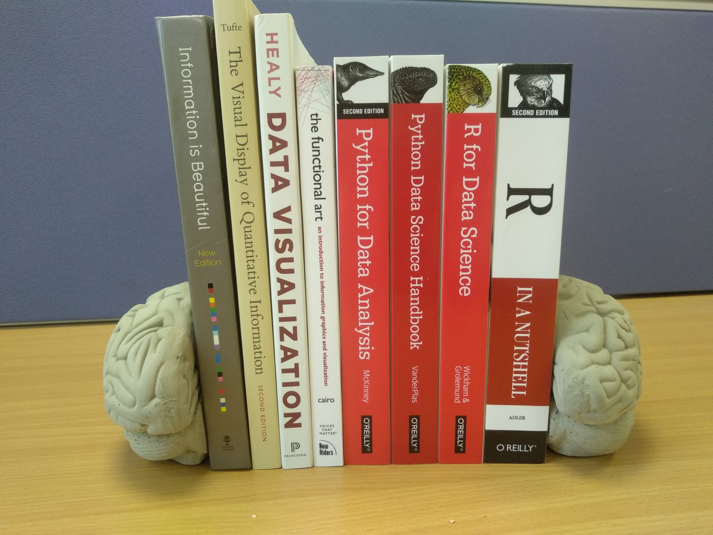

B Extra Reading

Further reading, including books, links, demos and packages. You don’t need to read all of this, but you will want to dig around. If I could recommend one book to accompany the course it would be
Healy, K. (2018). Data visualization: a practical introduction. Princeton University Press.
B.1 Visualisation (theory)
Healy, K. (2018). Data visualization: a practical introduction. Princeton University Press.
Cairo, A. (2012). The Functional Art: An introduction to information graphics and visualization. New Riders.
Tufte, E. R. (2001). The visual display of quantitative information. Cheshire, CT: Graphics press.
McCandless, D. (2012). Information is beautiful. London: Collins.
Rougier, N. P., Droettboom, M., & Bourne, P. E. (2014). Ten simple rules for better figures. PLoS Comput Biol, 10(9), e1003833. https://journals.plos.org/ploscompbiol/article?id=10.1371/journal.pcbi.1003833
Weissgerber, T. L., Milic, N. M., Winham, S. J., & Garovic, V. D. (2015). Beyond bar and line graphs: time for a new data presentation paradigm. PLoS biology, 13(4).
Nightingale: The Journal of The Data Visualisation Society
Podcast: Explore Explain: A Video and Podcast Series
Why you sometimes need to break the rules in data viz by Rosamund Pearce
B.2 The Reproducibility Crisis
Cancer Biology Reproducibility Project https://www.enago.com/academy/the-reproducibility-project-cancer-biology-to-replicate-only-18-studies-now/
Economics reproducibility https://www.wired.com/story/econ-statbias-study/
Video: Is Most Published Research Wrong https://www.youtube.com/watch?v=42QuXLucH3Q
Demo: p-hacking https://fivethirtyeight.com/features/science-isnt-broken/#part1
Open Science Collaboration. (2015). Estimating the reproducibility of psychological science. Science, 349(6251), aac4716.
B.3 Better practice
Munafo, M. R., et al. (2017). A manifesto for reproducible science . Nature Human Behaviour, 1, 0021. DOI: 10.0138/s41562-016-0021.
Markowetz, F. (2015). Five selfish reasons to work reproducibly. Genome biology, 16(1), 274. https://genomebiology.biomedcentral.com/articles/10.1186/s13059-015-0850-7
A Guide to Reproducible Code in Ecology and Evolution https://www.britishecologicalsociety.org/wp-content/uploads/2017/12/guide-to-reproducible-code.pdf
Gael Varoquaux: Computational practices for reproducible science https://www.slideshare.net/GaelVaroquaux/computational-practices-for-reproducible-science
Axelrod, V. (2014). Minimizing bugs in cognitive neuroscience programming. Frontiers in psychology, 5, 1435.
“our wishlist for what knowledge and skills we’d find in a well-prepared data scientist candidate coming from a masters program.” https://github.com/brohrer/academic_advisory/blob/master/curriculum_roadmap.md
Wilson, G., Bryan, J., Cranston, K., Kitzes, J., Nederbragt, L., & Teal, T. K. (2017). Good enough practices in scientific computing. PLoS computational biology, 13(6), e1005510.
B.4 Project organisation
Mike Frank onboarding guide http://babieslearninglanguage.blogspot.co.uk/2017/01/onboarding.html
Jenny Bryan’s advice on filenames: Naming Things
Emily Riederer Column naming contracts
Broman & Woo (2017) Data Organization in Spreadsheets https://www.tandfonline.com/doi/full/10.1080/00031305.2017.1375989
Video: Data Sharing and Management Snafu in 3 Short Acts https://www.youtube.com/watch?time_continue=2&v=N2zK3sAtr-4
Hadley Wickham: Tidy Data: http://vita.had.co.nz/papers/tidy-data.pdf
B.5 Coding
Readings in Applied Data Science https://github.com/hadley/stats337#readings
Stack overflow: asking good questions https://stackoverflow.com/help/how-to-ask
Stack overflow: provide a minimal, complete, verifable example https://stackoverflow.com/help/mcve
Our Software Dependency Problem https://research.swtch.com/deps
From Psychologist to Data Scientist https://www.neurotroph.de/2019/01/from-psychologist-to-data-scientist/
Bret Victor: Learnable Programming: Designing a programming system for understanding programs
Top 10 Coding Mistakes Made by Data Scientists
Coding error postmortem by Russ Poldrack, McKenzie Hagen, and Patrick Bissett (August 10, 2020)
B.6 R
B.6.1 Hints
[Prime Hints For Running A Data Project In] R(https://kkulma.github.io/2018-03-18-Prime-Hints-for-Running-a-data-project-in-R/)
RStudio Cheat Sheets: https://www.rstudio.com/resources/cheatsheets/
Here::Here https://github.com/jennybc/here_here
We are R-ladies - Twitter account with a rotating curator featuring discussions, package highlights, and tips
B.6.2 Courses / books
I recommend you start with swirl: https://swirlstats.com/
Lisa DeBruine, & Dale Barr. (2019). Data Skills for Reproducible Science. Zenodo. doi:10.5281/zenodo.3564348 https://psyteachr.github.io/msc-data-skills/
You may also enjoy:
Chester Ismay and Patrick C. Kennedy: Getting Used to R, RStudio, and R Markdown
Matt Crump: Reproducible statistics for psychologists with R
Danielle Navarro: [Learning Statistics With R] https://learningstatisticswithr.com/ * Particularly chapter 3 https://learningstatisticswithr-bookdown.netlify.com/intror
Data Science with R: An introductory course by Danielle Navarro
Adler, J. (2010). R in a nutshell: A desktop quick reference. " O’Reilly Media, Inc.".
Intro to R (Liz Page-Gould): http://www.page-gould.com/r/uoft/
Grolemund, G., & Wickham, H. (2018). R for data science. * See also https://r4ds.had.co.nz/
B.7 Making graphs (practice)
Graphing in R (Eric-Jan Wagenmakers and Quentin F. Gronau): http://shinyapps.org/apps/RGraphCompendium/index.php
B.8 Presentations
Kieran Healy : Making Slides
B.9 Statistics
Discovering Statistics Using R
Hox, J. (2010) Multilevel Analysis: Techniques and Applications
Statistical Rethinking: A Bayesian Course with Examples in R and Stan
model checking package: Performance
B.10 Advanced Reading, Background & Other Recommends
Data Feminism by Catherine D’Ignazio and Lauren F. Klein. The MIT Press. 2020
Rachel Thomas’s Applied Data Ethics Syllabus
Hands-on Machine Learning with Scikit-Learn, Keras, and TensorFlow: Concepts, Tools, and Techniques to Build Intelligent Systems by Aurelien Geron (2019)
Data Visualization course by Dr. Andrew Heiss of Georgia State University
B.11 Pedagogy
Brown, N. C., & Wilson, G. (2018). Ten quick tips for teaching programming. PLoS computational biology, 14(4), e1006023.